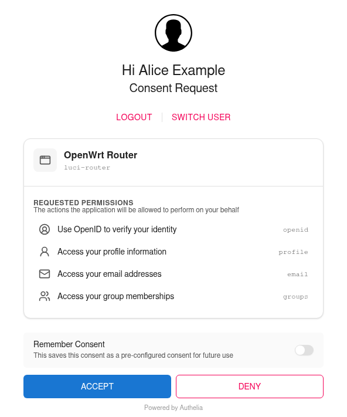

How to Configure Authelia¶
This guide describes how to connect luci-sso to an Authelia instance.
The configuration and screenshot were checked against Authelia 4.39.28. Key names can differ in other releases.
1. Register an OIDC client in Authelia¶
Generate a client secret and its hash:
authelia crypto hash generate pbkdf2 --variant sha512 --random --random.length 72 --random.charset rfc3986
The command prints a Random Password (the plaintext secret, for the router) and a Digest (the hash, for Authelia). To hash a secret you already have, use --password '<your-secret>' in place of the three --random options. If Authelia runs in Docker, prefix the command with docker run --rm authelia/authelia:latest.
Add the client to your Authelia configuration.yml, with the digest as client_secret:
identity_providers:
oidc:
claims_policies:
luci_sso:
id_token: ['email', 'email_verified', 'name', 'groups']
clients:
- client_id: luci-router
client_name: OpenWrt Router
client_secret: '$pbkdf2-sha512$310000$...' # the Digest, not the plaintext
public: false
authorization_policy: one_factor
redirect_uris:
- https://<YOUR_ROUTER_IP_OR_DOMAIN>/cgi-bin/luci-sso/callback
scopes:
- openid
- profile
- email
- groups
userinfo_signed_response_alg: none
token_endpoint_auth_method: client_secret_post
claims_policy: luci_sso
luci-sso sends the client secret in the token request body (client_secret_post). Keep the token_endpoint_auth_method line: without it, Authelia accepts only client_secret_basic and rejects the router's token request with HTTP 401.
By default Authelia leaves email and groups out of the ID Token and returns them only from its UserInfo endpoint. luci-sso then fetches UserInfo on every login, which works while userinfo_signed_response_alg is none (the default). The luci_sso claims policy puts them in the ID Token, so no UserInfo request is needed. Keep email_verified in its list: an email in the ID Token counts for role matching only with the ID Token's own email_verified claim (see Map by email).
Optional settings for the client:
require_pkce: trueandpkce_challenge_method: S256make Authelia refuse any login without PKCE.luci-ssoalways sends an S256 challenge.- Authelia asks the user to consent on every login. To let users tick Remember Consent, add
consent_mode: pre-configuredandpre_configured_consent_duration: 1y(any duration).

Restart Authelia after saving the configuration: it reads the file only at start.
2. Configure the router¶
The Client Secret is the plaintext secret — Authelia stores the hash, but the router presents the plaintext during token exchange.
Navigate to Services > Single Sign-On.
Fill in the Settings section:
| Field | Value |
|---|---|
| Enable SSO | On |
| Issuer URL | https://auth.example.com |
| Client ID | luci-router |
| Client Secret | Your plaintext secret |
| Redirect URI | https://<YOUR_ROUTER_IP_OR_DOMAIN>/cgi-bin/luci-sso/callback |
| Scopes | openid profile email groups |
| Clock Tolerance | 60 |
The Redirect URI must exactly match the value in the Authelia client config.
Click Save & Apply.
uci set luci-sso.default.issuer_url='https://auth.example.com'
uci set luci-sso.default.client_id='luci-router'
uci set luci-sso.default.client_secret='<YOUR_PLAINTEXT_SECRET>'
uci set luci-sso.default.redirect_uri='https://<YOUR_ROUTER_IP_OR_DOMAIN>/cgi-bin/luci-sso/callback'
uci set luci-sso.default.scope='openid profile email groups'
uci set luci-sso.default.clock_tolerance='60'
uci set luci-sso.default.enabled='1'
uci commit luci-sso
The redirect_uri must exactly match the value in the Authelia client config.
The Issuer URL is the authelia_url of the session cookie that covers Authelia's domain in configuration.yml, exactly: same host and port, no path and no trailing slash. Authelia answers discovery requests for other host names with HTTP 400.
3. Configure role mapping¶
A role says which users it matches, by email or by group. What the role may do on the router is its rpcd login entry. On a fresh install, the shipped admin role grants full access. To give some users less, add a role with its own Read Access and Write Access, as described in How to Configure Role-Based Access Control. A user gets the first role that matches, from the top.
Map by email¶
Navigate to Services > Single Sign-On and scroll to the Users section.
Click Edit in the admin row. In Email Addresses, replace the placeholder admin@example.com with the user's email address, then click Save in the editor.
Click Save & Apply.
uci -q del_list luci-sso.admin.email='admin@example.com'
uci add_list luci-sso.admin.email='user@example.com'
uci commit luci-sso
An email matches only if Authelia marks it as verified, with email_verified: true next to it. Authelia does so for every user, but only where it sends the email: in UserInfo, or in the ID Token when the claims policy lists email_verified. With a claims policy that lists email without email_verified, the login fails with [403] USER_NOT_AUTHORIZED unless a group matches. Authelia does not check addresses itself, so true means the address in its user database, which an administrator controls.
Map by group¶
Authelia returns the user's groups from its authentication backend (file or LDAP) in the groups claim: in the ID Token with the luci_sso claims policy from Step 1, otherwise through UserInfo. The group name must exactly match the name as Authelia returns it (case-sensitive).
Navigate to Services > Single Sign-On and scroll to the Users section.
Click Edit in the admin row. In Groups, enter the group name, then click Save in the editor.
Click Save & Apply.
uci add_list luci-sso.admin.group='router-admins'
uci commit luci-sso
4. Verify¶
Check that the service is active. On the router:
uclient-fetch -q -O - --no-check-certificate 'https://127.0.0.1/cgi-bin/luci-sso?action=enabled'
# Expected: {"enabled": true}
{"enabled": false} means SSO is turned off. An HTTP 500 error instead of JSON means SSO is turned on but the configuration was rejected; the log line Configuration rejected: … before [500] CONFIG_ERROR names the option.
Navigate to the LuCI login page. The Login with SSO button should appear. Clicking it redirects to your Authelia instance. After the user signs in, Authelia shows the consent page from Step 1, then returns to the router.
Authelia has no end-session endpoint, so LuCI's Log out ends the router session only. The Authelia session stays, and the next Login with SSO does not ask for a password. To end the Authelia session too, open https://auth.example.com/logout.
Troubleshooting¶
Navigate to Status > System Log and filter for luci-sso.
logread -e luci-sso | tail -30
| Symptom | Likely cause |
|---|---|
| A message under Login with SSO says "The identity provider is not responding" | The browser cannot reach the IdP; the router has no error to log. Open https://auth.example.com/.well-known/openid-configuration in the same browser, on the same device. See The SSO button says the identity provider is not responding. |
[502] OIDC_DISCOVERY_FAILED, preceded by Discovery fetch failed for [id: …]: … |
The router cannot reach auth.example.com; the end of the line names the cause. Test from the router with uclient-fetch -q -O - 'https://auth.example.com/.well-known/openid-configuration'. If the line ends in HTTP_REQUEST_FAILED (CERT_UNTRUSTED), the router does not trust Authelia's certificate; see How to Install a Private CA Certificate. |
[502] OIDC_DISCOVERY_FAILED, preceded by Discovery fetch HTTP 400 from [id: …] |
issuer_url is not the authelia_url of any session cookie in Authelia's configuration (a different host name, a port, or an IP address). Authelia logs no session cookie configuration matches url '…'. Set issuer_url to the authelia_url exactly. |
[502] OIDC_DISCOVERY_FAILED, preceded by DISCOVERY_ISSUER_MISMATCH: issuer_url is "…" but the discovery document declares "…" |
issuer_url differs from the issuer Authelia declares, even if only by a trailing slash or letter case. Copy the declared value into issuer_url exactly. |
[500] CONFIG_ERROR, preceded by Configuration rejected: redirect_uri is mandatory and must use HTTPS |
redirect_uri was never saved. Set it with uci set luci-sso.default.redirect_uri='https://<YOUR_ROUTER_IP_OR_DOMAIN>/cgi-bin/luci-sso/callback' and uci commit luci-sso. Other Configuration rejected reasons name the option to fix. |
| Authelia shows "An error occurred processing the request" with the hint "The 'redirect_uri' parameter does not match any of the OAuth 2.0 Client's pre-registered 'redirect_uris'" | The redirect_uri in UCI does not exactly match a redirect_uris entry in Authelia's client config. The router logs no OIDC callback received line. |
[502] TOKEN_EXCHANGE_FAILED, preceded by Token exchange HTTP 401 |
Authelia rejected the client credentials: the client secret is wrong (UCI needs the plaintext, Authelia the hash), or the client config has no token_endpoint_auth_method: client_secret_post line (Authelia logs … is configured to only support 'token_endpoint_auth_method' method 'client_secret_basic'). |
UserInfo fallback failed [session_id: …]: USERINFO_INVALID_JSON, then [403] USER_NOT_AUTHORIZED |
Authelia returned a signed UserInfo response, which luci-sso cannot read, so the email and groups it carries are lost. Set userinfo_signed_response_alg: none on the client, or add the luci_sso claims policy from Step 1 so that UserInfo is not needed, and restart Authelia. |
[403] USER_NOT_AUTHORIZED, preceded by Ignoring the unverified email of user [sub_id: …] for role matching |
The claims policy puts email in the ID Token without email_verified. Add 'email_verified' to its id_token list, as in Step 1, and restart Authelia. |
[403] USER_NOT_AUTHORIZED, preceded by User [sub_id: …] matched no roles |
The user's email or group does not match any configured role. Email matching ignores case; group matching is case-sensitive, so check the group name exactly. |
For a full list of error codes, see the Log Messages Reference. For every check luci-sso makes of an identity provider, and the error each failure logs, see Provider Compatibility.